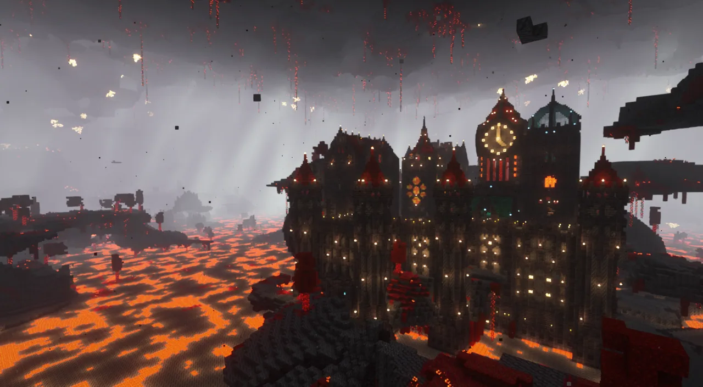
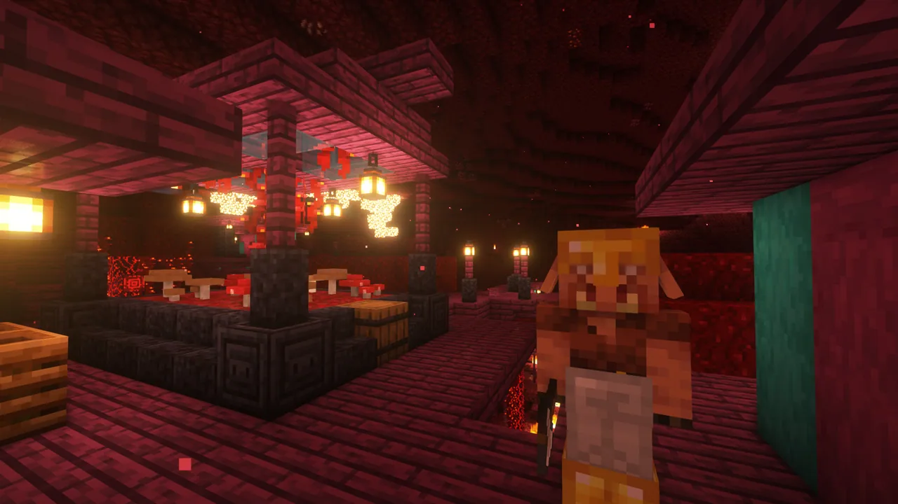
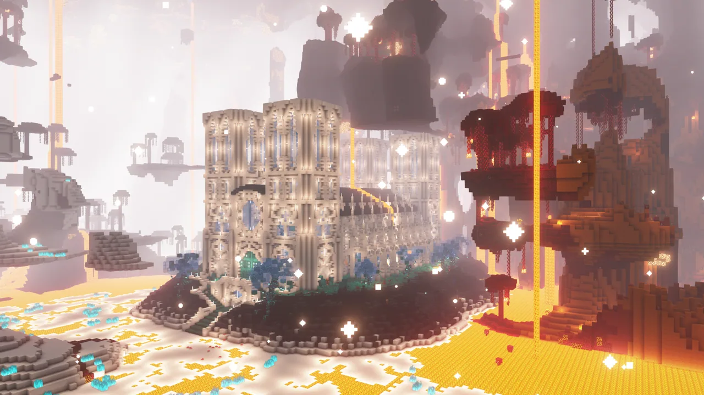
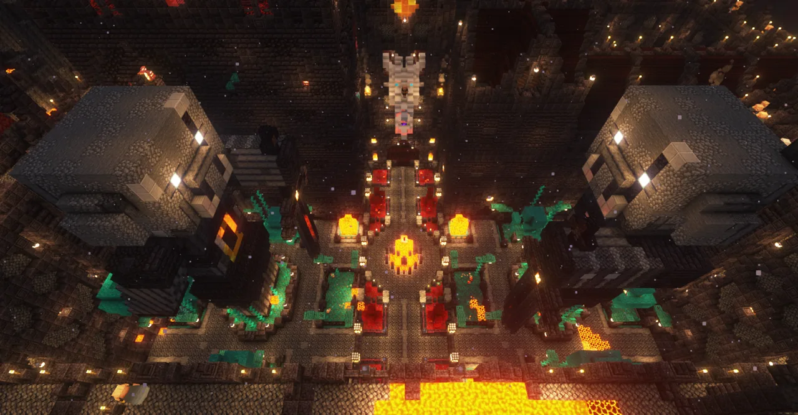
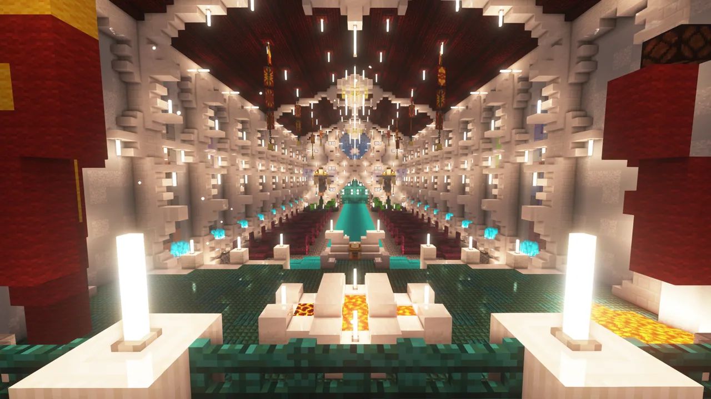
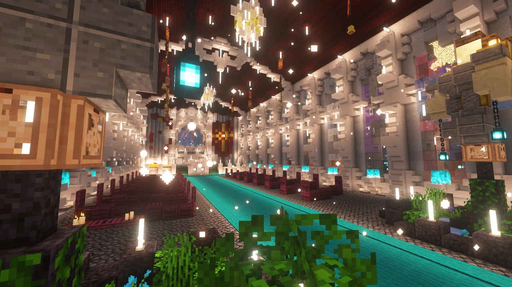
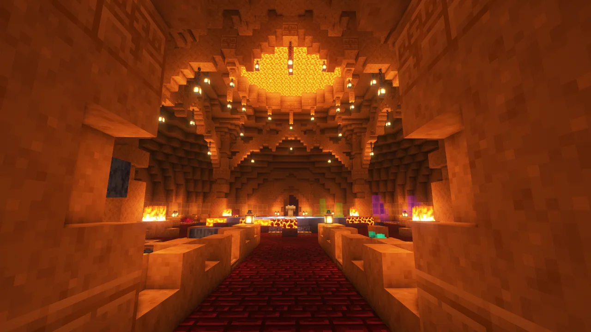
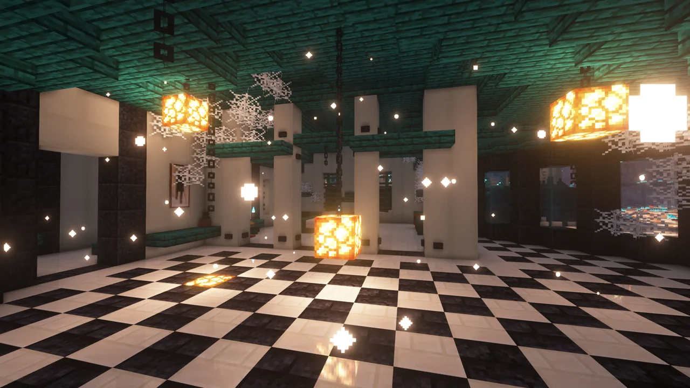

本服务器初衷是为了让玩家在游玩过程中融入到大大小小的集体里，故不提倡PVP。
「PVE系」 玩法是指 以挑战和战胜游戏环境中的敌对生物、Boss以及环境障碍作为核心乐趣与主要驱动力的玩法。 玩家扮演 战士 或 征服者，将游戏世界视为一个充满试炼的 竞技场 或 战场，其核心体验在于 通过精心的准备、策略性的战斗操作和持续的能力成长，克服越来越强大的非玩家控制（Environment）的敌人与挑战，享受战斗胜利带来的征服快感与实力证明。
下界








结构
为了与这些美妙的生物群系相得益彰，还有9 个以上的结构供您探索和征服。在灰烬荒原 (Ash Barrens)中，禁忌城堡 (Forbidden Castle)森然矗立，勇敢的猪灵们守卫着它珍贵的战利品——这是数据包中最大、最复杂的随机生成结构之一！或者，您可以征服不祥的圣所 (Sanctum)，那里有灾厄村民守卫着黑暗的秘密和强大的武器。骷髅厨师Torte守护着他的石英厨房 (Quartz Kitchen)，而与此同时，凋灵暴君（攻击你城镇的那位）正在守护着它的传送门工厂。同样是恶霸，您会先征服哪一个呢？
物品
您击败的每个怪物和征服的每个结构都有其回报——Incendium 会用丰厚的战利品和定制武器慷慨地奖励您！击败悬炎 (Hovering Inferno)可能会赢得焚焰之轨 (Trailblazer)——一把能喷吐火焰的弓。禁忌城堡的城墙内藏着一把高伤害但需付出代价的牺牲巨剑 (Greatsword of Sacrifice)，以及实用的重型尖嘴镐 (Hefty Pickaxe)。或者您也许更喜欢寻找能抵御各种毒性攻击的生化防护服 (Hazmat Suit)。这里有超过 25 种物品供您打造属于自己的游戏风格！
生物
任何数据包若没有自己独特的怪物与您对抗，都是不完整的。毒料堆 (Toxic Heap)是敏捷的剧毒史莱姆 (Toxic Slimes)的家园，而枯焦森林 (Withered Forest)则被不息的亡魂 (Restless Spirits)所萦绕。另一方面，您可以执行救援任务，从废弃高塔 (Abandoned Tower)中拯救小恶灵 (Ghastling)（不是快乐恶魂）——作为回报，它会保护您免受恶魂的攻击。如果这些都不够挑战，您可以召唤全能的悬炎 (Hovering Inferno)首领，来一场艰难缠斗。
末影龙
该玩法已于25年8月17日恢复。如遇到问题请及时反馈。
数据包（与城镇是一个作者）新增了14种不同的末影龙类型，并加强了原版末影龙。这可能会对刷沙机、天基屠龙炮造成致命打击。
以下是具体信息。
原版末影龙基础能力
（所有末影龙变种在末地水晶全部被摧毁后均会激活以下能力）
1. 召唤末地烛尖刺
触发时机：
末影龙停歇时
末影龙准备降落停歇时
作为其他行动失败的备用手段
机制说明：
功能类似 唤魔者尖牙，对接触玩家造成伤害
2. 强制玩家着陆
效果：
使所有玩家进入 超重力状态（持续 20 秒）
行为影响：
穿戴鞘翅的玩家会安全迫降至地面
期间禁止任何起飞动作
执行逻辑：
若当前无飞行玩家，则改为尝试其他能力
3. 召唤潜影贝导弹
执行方式：
在末影龙周围生成 12 枚环形分布的潜影贝导弹
行为模式：
短暂延迟后开始随机锁定玩家
执行限制：
若区域内已存在活跃的潜影贝导弹，则改为召唤末地烛尖刺
所有末影龙变种
僵尸化末影龙 (Zombified Dragon)
吐息云： 扩散范围更大，附加 饥饿 + 反胃 效果
周期性召唤： 僵尸仆从
环境改造： 飞行时将地面转化为 泥土
出现难度： 仅限 初生 (Fledgeling) 与 凶暴+ (Ferocious+) 及以上难度
诡异末影龙 (Warped Dragon)
特性： 飞行速度较慢，更频繁 停歇
战术： 周期性在战场内 传送
吐息云： 附加 中毒 + 缓慢 效果，直至战斗结束才消散
出现难度： 仅限 初生 (Fledgeling) 与 凶暴+ (Ferocious+) 及以上难度
幽匿末影龙 (Sculk Dragon)
吐息云： 附加 黑暗 + 瞬间伤害 效果
特殊攻击： 周期性对玩家发动 音爆攻击
环境改造： 飞行时将地面转化为 各类幽匿方块
出现难度： 初生 (Fledgeling)、强力 (Powerful) 与 凶暴+ (Ferocious+) 及以上难度
冰霜末影龙 (Frost Dragon)
吐息云： 附加 极限缓慢 + 缓降 效果
环境改造： 飞行时将地面转化为 雪与冰
召唤机制：
周期性生成 冰屋
冰屋可能出现在：末地传送门周围、最多3名随机玩家附近、最多3个末地水晶周围
冰屋 15秒后自毁，对内部或紧贴外部的玩家造成伤害
出现难度： 初生 (Fledgeling)、强力 (Powerful) 与 凶暴+ (Ferocious+) 及以上难度
暴君末影龙 (Dragon Tyrant)
吐息云： 附加 凋零 + 虚弱 效果
周期性召唤： 凋灵骷髅仆从
环境改造： 飞行时将地面转化为 灵魂沙与灵魂火
出现难度： 强力 (Powerful)、残酷 (Cruel) 与 凶暴+ (Ferocious+) 及以上难度
骸骨末影龙 (Skeletal Dragon)
特性： 极其频繁 停歇
召唤机制： 周期性召唤骷髅仆从（消耗自身生命值）
无敌状态： 骷髅仆从存活期间 免疫伤害
恢复能力： 即使所有末地水晶被摧毁，仍会 缓慢回复生命值
出现难度： 强力 (Powerful)、残酷 (Cruel) 与 凶暴+ (Ferocious+) 及以上难度
炽焰末影龙 (Blazing Dragon)
环境改造： 在飞行轨迹下方 持续引燃地面
攻击强化： 更频繁发射 火球
周期性召唤： 烈焰人仆从
出现难度： 仅限 残酷+ (Cruel+) 及以上难度
远古末影龙 (Elder Dragon)
特性： 自带 发光 效果
吐息云： 附加 失明 + 瞬间伤害 效果
法术攻击： 周期性对最多3名随机玩家施放 随机法术
召唤单位： 恼鬼仆从，召唤 唤魔者尖牙
特殊动作： 腾空飞升
出现难度： 仅限 残酷+ (Cruel+) 及以上难度
龙妖 (Dragon Wight)
特性： 无声（播放特殊环境音效），飞行速度 大幅提升
攻击模式： 更频繁 发射火球 与 俯冲突袭玩家
限制： 永不降落停歇
出现难度： 仅限 不朽+ (Immortal+) 难度
终焉之龙 (The Last Dragon)
唯一性： 必定作为 第20条龙 出现（不朽 (Immortal) 难度）
吐息云： 扩散范围更大，附加 飘浮 + 极限虚弱 效果
环境改造： 飞行时将地面转化为 紫水晶块
特殊攻击：
频繁 强制击落 飞行中的玩家
频繁向最多5名随机玩家发射 紫水晶碎片 弹射物
机制说明： 击败后 仍可召唤更多末影龙
信标末影龙 (Beacon Dragon)
特性： 自带 发光 效果，贴地飞行时速度 大幅降低
吐息云： 附加 发光 + 瞬间伤害 效果，并 激怒 附近末影人攻击受影响玩家
信标光束： 持续投射 "信标"粒子光束
光束在 三个目标间切换：龙前方正对位置、龙正下方位置、最近玩家位置
对命中的玩家或生物造成 持续小额伤害
无法穿透 末影龙免疫的方块
出现难度： 仅限 凶暴+ (Ferocious+) 及以上难度
荒漠末影龙 (Desert Dragon)
环境改造： 飞行时将地面转化为 沙 并频繁生成 仙人掌
攻击强化： 极频繁发射 常规、不可格挡的火球
周期性召唤： 疣猪兽仆从
吐息云： 附加 饥饿、重度缓慢 及 长时挖掘疲劳 效果
出现难度： 仅限 凶暴+ (Ferocious+) 及以上难度
雷霆末影龙 (Thunder Dragon)
环境改造： 在战场边缘生成 永久性雷电陷阱
吐息攻击： 吐息召唤闪电（非区域效果云）
火球吐息云： 附加 强效瞬间伤害 + 显著加速 效果
特性： 飞行速度 略快，较少停歇
固定掉落： 一把附魔 引雷 的三叉戟
出现难度： 仅限 凶暴+ (Ferocious+) 及以上难度
万龙之王 (10,000 Dragon)
唯一性： 必定作为 第30条龙 出现（凶暴 (Ferocious) 难度）
吐息云： 扩散范围更大，附加 长效中毒 + 强效瞬间伤害 效果
环境改造： 飞行时将地面转化为 金色方块
技能循环： 频繁发动以下 一种或多种 能力：
强制击落 飞行中的玩家
向最多5名随机玩家发射 持续金色激光
执行 重踏地面 攻击，产生 伤害性冲击波
机制说明： 击败后 仍可召唤更多末影龙
末地水晶再生规则
再生触发：每当末地水晶被摧毁时自动再生
再生次数：
首次战斗最大再生次数为 2 次
难度越高，单水晶最大再生次数 越多
再生限制：
实际再生次数可 低于最大值
但 至少再生 1 次
末地水晶能力附加规则
能力生成：再生时有概率获得 1-3 项 特殊能力
难度影响：
高难度下 必带至少 1 项能力
高难度水晶 初始即附带能力（无需先再生）
部分能力 仅高难度解锁
视觉提示：多数能力会释放 特征粒子
末地水晶能力库
牢笼水晶 (Caged)
效果：水晶外围生成 强化防护笼
视觉提示：铁栏杆粒子
力场水晶 (Forcefield)
效果：完全免疫抛射物攻击
视觉提示：透明护盾粒子
炽炎水晶 (Fiery)
效果：近距离玩家持续受到 火焰伤害
视觉提示：火焰粒子
激光水晶 (Laser)
效果：周期性向最近玩家发射 直线激光
反制策略：可通过跳跃躲避
视觉提示：红色光束粒子
巫术水晶 (Witch)
效果：周期性对 无状态效果玩家 施加 随机中立/负面效果
出现条件：仅限 强力+ (Powerful+) 及以上难度
视觉提示：药水云粒子
反重力水晶 (Anti-Grav)
效果：黑曜石柱附近玩家获得 飘浮 效果
出现条件：仅限 强力+ (Powerful+) 及以上难度
视觉提示：羽毛粒子
诅咒水晶 (Cursed)
效果：
摧毁时对最近玩家造成 巨额伤害
无视觉粒子提示
特殊限制：全场 同时仅存 1 个
出现条件：仅限 残酷+ (Cruel+) 及以上难度
发射者水晶 (Launcher)
效果：
充能时 发光
充能期间，对进入其 领空范围 的飞行玩家发射 热追踪末影之眼导弹
出现条件：仅限 凶暴+ (Ferocious+) 及以上难度
视觉提示：末影粒子 + 充能光效
传送水晶 (Portal)
效果：周期性将最多 3 名随机玩家 传送至随机黑曜石柱顶端
特殊限制：全场 同时仅存 1 个
出现条件：仅限 凶暴+ (Ferocious+) 及以上难度
视觉提示：末影传送门粒子
万龙水晶 (10,000)
专属性：仅在 万龙之王战斗 中出现
绝对统治：
存在时 所有其他末地水晶无敌
必须优先击破此水晶才能攻击其他目标
特殊限制：全场 同时仅存 1 个
视觉提示：金色信标光束
挑战奖励
为何迎战不断增强的末影龙？
击败末影龙后，传送门附近将掉落专属战利品（随龙种变化），并固定产出1件龙主题神器。这些神器自带对抗末影龙的特化附魔，但均携带崩解诅咒。
龙族神器清单
▸ 屠龙巨剑 (Dragonslayer Sword)
伤害值：15（⚔️ 攻速大幅提升）
附魔：翼展 V + 龙灾 IV
▸ 龙筋重弩 (Dragon-Sinew Crossbow)
附魔：龙息贯穿 + 龙灾 IV
▸ 龙牙矿镐 (Dragonscale Pickaxe)
特性：挖掘黑曜石 效率提升
附魔：破柱 III
▸ 龙革护甲 (Dragonhide Armor) [4件套]
防御值：单件超越下界合金，全套提供 25点总护甲
核心附魔：
每件携带 龙心守护（等级不等）
每件携带 龙鳞反噬（等级不等）
战靴特技：虚空漫步（龙革胫甲专属）
▸ 龙颅盾牌 (Dragonskull Shield)
附魔：净空领域 + 反冲压制
▸ 龙翼飞翅 (Dragonscale Wings)
特性：提供 额外护甲值
附魔：龙心守护 III + 翔天
▸ 龙权法杖 (Draconic Scepter)
附魔：龙息贯穿 V + 龙灾 IV
主动技能：
右键：发射 48格激光，对命中点周围生物造成伤害
可穿透 力场水晶，对末影龙/水晶 造成范围伤害
潜行+右键：蓄力释放 范围伤害法术（耐久消耗＞激光）
▸ 龙瞳目镜 (Dragon Eyes)
用法：右键装备至头盔栏
附魔：龙族视界 + 龙肺 III
▸ 龙心锚点 (Dragonheart Anchor)
放置类道具
复苏点设定：潜行靠近已放置锚点
保命机制：生命≤1心/坠入虚空时，传送回锚点并恢复少量生命（跨维度生效）
限制说明：
无法抵御致命伤害
单锚点 仅限使用3次
手动破坏 不会掉落（即使带精准采集）
末地外放置 立即爆炸
⚠️ 重复获取规则：已拥有神器者 降低同类掉落概率
龙族专属附魔
（无法通过附魔台/常规战利品获取）
▸ 崩解诅咒 (Curse of Deterioration)
神器绑定诅咒
不可砂轮解除，且 排斥经验修补
▸ 翼展 (Wingspan)
剑类附魔
攻击触发 强化版横扫之刃效果
▸ 龙灾 (Dragonbane)
武器附魔
对末影龙 造成额外伤害
▸ 龙息贯穿 (Exhalation)
弩类附魔
箭矢伤害：15（对龙特效）
射程增益：末影龙/水晶 命中距离+8格
限制：无法穿透力场水晶
▸ 破柱 (Pillaring)
镐类附魔
采掘时 连锁挖掘后续3格方块（消耗耐久）
与耐久附魔兼容
▸ 龙心守护 (Dragonhearted)
护甲/鞘翅附魔
按等级提升 最大生命值（多件叠加）
▸ 龙鳞反噬 (Dragonyield)
护甲附魔
对末影龙触发 荆棘反伤（多件叠加）
▸ 虚空漫步 (Voidwalk)
战靴附魔
悬空能力：无地面支撑时 可在虚空上方漂浮（无鞘翅探索末地外岛神器）
▸ 净空领域 (Clear Skies)
盾牌附魔
格挡时 瞬间驱散龙息云
▸ 反冲压制 (Kickback)
盾牌附魔
成功格挡后 击退攻击者并反伤（对龙特攻）
▸ 翔天 (Altitude)
鞘翅附魔
飞行时仰视触发 强效飘浮（急速爬升）
▸ 龙族视界 (Dragonsight)
头盔/龙瞳目镜附魔
透视效果：显示视线方向 隐藏矿物轮廓
代价：装备时 持续消耗耐久
▸ 龙肺 (Dragon Lungs)
头盔附魔
复合效果：同步 水下速掘 + 水下呼吸
📜 附魔书机制（v1.5+）： 集齐全部神器（除龙心锚点）后，末影龙有概率掉落 龙族附魔书（部分附魔不可通过书本获取）
进度系统
成就①：击杀 所有类型 末影龙
成就②：征服 各难度层级 末影龙
成就③：收集 全套神器
不祥龙战机制
▶ 触发条件
当携带不祥之兆状态的玩家存在于战场时复活末影龙
触发后立即清除所有玩家的不祥之兆
▶ 核心规则
1.
难度跃升
战斗难度 提升1个完整层级（例：初生→强力）
影响要素：
可出现的 龙种与水晶能力类型
末影龙 基础生命值
末地水晶 最大再生次数
2.
龙种命名
所有龙种名称前缀统一变更为 “不祥 XX 龙”（例：不祥冰霜龙）
3.
能力强化
末影龙与水晶的 周期性技能发动频率显著提升
末影龙 全程激活水晶全灭后能力（无视水晶存活状态）
▶ 终极奖励
掉落战利品 按跃升后难度层级计算
所有掉落物 数量翻倍，包含：
基础材料（末影珍珠、龙息等）
专属神器（可能获得两件相同神器）
装备强化
这个玩法大部分服务器都有，懒得写了，去玩末影龙了。加颜色用于提醒后期补充。
最后编辑于2025年7月27日